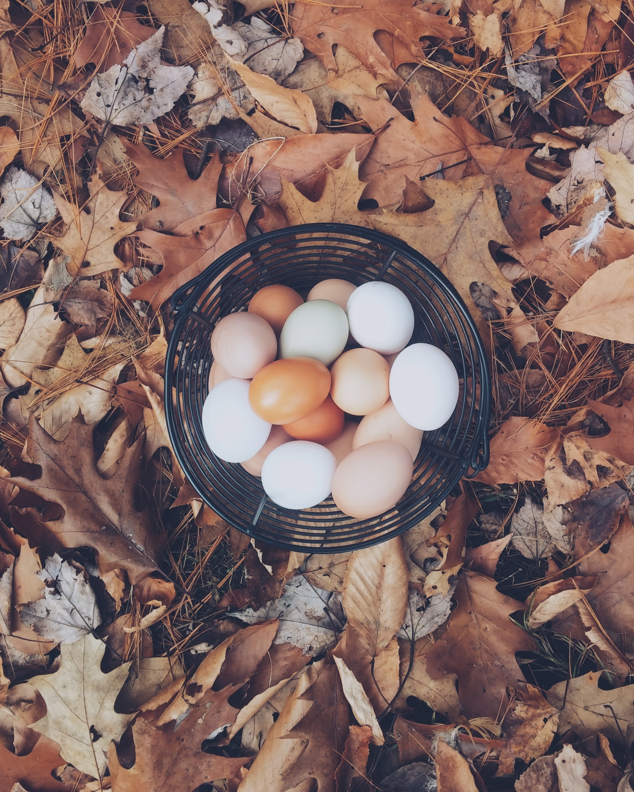

Welcome! Home Grown Farm CSA is located in Long Island, New York on a 30 acre bed of lush soil.
Our farms have a rich history in providing locally grown vegetables and fruits across our 30 acre land. Created in 1971 in response to the diminishing access to healthy foods for many New Yorkers, we went from serving only our immediate neighborhood to expanding into many urban neighborhoods in counties like Union Square, Prospect Park and Corona Meadows. Our staff is friendly and approachable. We pride ourselves on providing quality service as well as quality food.

The farm is open 11AM-5PM Monday through Friday. We are open year round. With that, there may be times when a food item is less abundant at one time than it is at another point in the year. We will try our best to accommodate your request. In the winter months we will not be open.